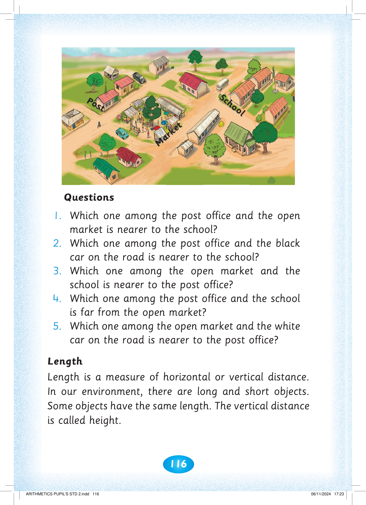

116


A village map shows roads, houses and trees, with the post office on the left, the open market in the centre, the school on the right, a black car near the post office and a white car near the school. Questions. 1. Which one among the post office and the open market is nearer to the school? 2. Which one among the post office and the black car on the road is nearer to the school? 3. Which one among the open market and the school is nearer to the post office? 4. Which one among the post office and the school is far from the open market? 5. Which one among the open market and the white car on the road is nearer to the post office?

1. Which one among the post office and the open market is nearer to the school?
2. Which one among the post office and the black car on the road is nearer to the school?
3. Which one among the open market and the school is nearer to the post office?
4. Which one among the post office and the school is far from the open market?
5. Which one among the open market and the white car on the road is nearer to the post office?
Length. Length is a measure of horizontal or vertical distance. In our environment, there are long and short objects. Some objects have the same length. The vertical distance is called height.
Length is a measure of horizontal or vertical distance.
In our environment, there are long and short objects.
Some objects have the same length. The vertical distance is called height.


ARITHMETICS PUPIL'S STD 2.indd 116
06/11/2024 17:23